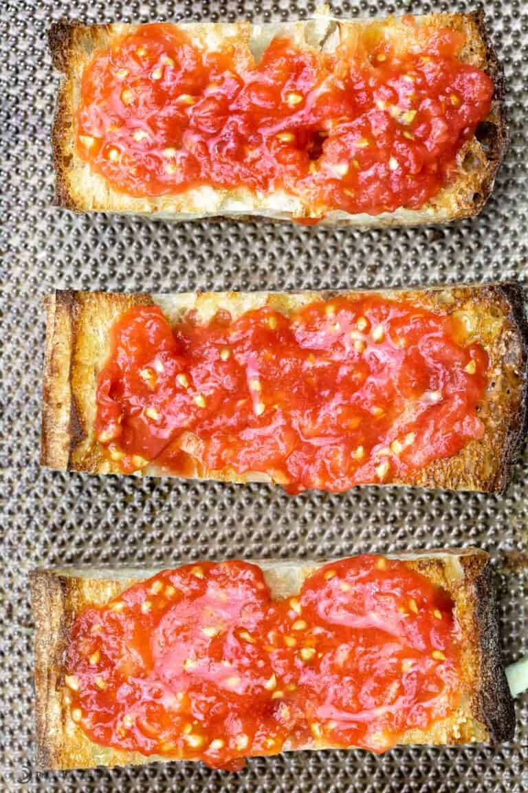

Pan Con Tomate

Description
Pan con Tomate (Spanish Tomato Bread) is a popular Catalan tapa made with simple ingredients including fresh tomatoes, hearty bread, garlic, and olive oil! A few tips make all the difference.
Ingredients
- Russtic bread (I used Ciabatta bread)
- 3 Tomatoes
- Extra virgin olive oil
- Garlic – A large clove is best for rubbing all over the bread.
- Salt – You can use sea salt or kosher salt in this recipe.
- Lime juice – Optional but adds a nice flavor to contrast the tomato and garlic.
Steps
- Oil and toast the bread. Slice the ciabatta loaf in half length-wise then into 2-inch slices. Brush with good olive oil and arrange on a sheet pan. Toast about 6 inches from the broiler for 3 minutes or less, until golden brown.
- Grate the tomatoes. Make a small cut at the top of the tomato an over the large holes of a box grater. Season with salt and a splash of lime juice (optional).
- Assemble the tomato bread. When the bread is ready, rub the garlic cloves over the hot bread. Spread the tomato puree over the bread and then serve.